In this post I introduce the CUDA programming ecosystem by writing a kernel achieves 95% of cuBLAS’s SGEMM performance. I hope this helps those are just getting started in CUDA programming.
Introduction
GEMM is the corner stone of modern machine learning, many of us have been using high-level interfaces like torch.matmul or simply t1 * t2 for granted without getting into the weeds (for a good reason!) and I was no different.
However, machine learning isn’t always just about designing the best loss function. Given the skyrocketing cost of training and running large models, apply good system engineering principals to machine learning (or sometimes, vice versa) is of great interest.
As I was researching on various ways to make large ML model inference faster (which by itself deserves another post, stay tuned🙂), there’s no going around writing my own kernel. I spent the last couple weeks reviewing CUDA programming from the beginning, and wrote a SGEMM kernel that achieves 95% of cuBLAS (Nvidia’s close-sourced Cuda Basic Linear Algebra Subroutine library).

Starting from the basics
Fundamentally, programming in CUDA (like any other parallel programming paradigm) is about breaking down a problem into sub-problems in a way that maximally utilize the hardware, which, usually consists of answering the following questions (iteratively, for multiple times):
- What are the ways I can break down my problem?
- Given a particular way to break down the problem, what’s the bottleneck of my current solution?
- Can the bottleneck of the solution be improved if
- I break down the problem in a different way?
- I apply hardware-specific tricks to improve the performance?
To meaningfully answer these questions, one needs to understand the GPU hardware.
GPU Hardware
![A simplified overview of GPU architecture, numbers are for modern (as of 2024) GPU SM: Streaming Multiprocessor, the first-level “parallel component” in GPU, there’re 128 SM in a RTX4090 HBM: High Bandwidth Memory, the “global memory”/”device memory” of GPU, size is usually around 20GB~80GB. Communicating with this memory is considered extremely slow, on the order of 400-800 cycles per access. L2 cache: The cache for HBM, read and writes to HBM will be cached here. Communication with this memory is much faster (but Nvidia doesn’t disclose it publicly), a ballpark number for is 2TB/s. SMSP: Streaming Multiprocessor Sub-Partition, introduced in the Ampere architecture, the second-level “parallel component” in GPU, there’re 4 SMSP in an SM. L1 cache: Each SM has its own L1 cache (smaller), also used to cache read and writes to HBM. Read/write to this memory usually takes 20-40 cycles. Shared Memory: Each SM has a chunk of memory for all threads/processes running on all of its SMSP. Read/write to this memory usually takes 20-40 cycles as well. Register File: A chunk of registers local to each SMSP (and local to the threads running on it). Read/write to registers takes 1 cycle (as fast as you can get). Warp Scheduler: The scheduler that schedules which warp gets run on the SMSP at any given time, more on this later. INT32: The arithmetic “core” that performs 32-bit integer arithmetics. This core works on scalar values. FP32: The arithmetic “core” that performs 32-bit floating point arithmetics. This core works on scalar values. Tensor Cores: The arithmetic “core” that can both perform floating point arithmetics and integer arithmetics. This core works on a bunch of values at a time (hence the name tensor)](memory_hierarchy.png)
The above diagram hopefully depicts what a modern (Nvidia) GPU consists of. There’re a few things to note here about the hardware:
Both L1 cache and L2 cache are “invisible” to programmers in the sense that you can’t directly manipulate them (but you can set the persistence size of L2 cache, or give hints to the machine w.r.t. the cache policy)
L1 cache and Shared Memory actually the same physical memory, it’s up to the programmer to configure the size of each.
The bandwidth between each component varies greatly from GPU to GPU, but generally
\[ \text{HBM} < \text{L2} <\text{L1} = \text{Shared Memory} < \text{Register File} \]
Different GPU have different configurations of cores
Tensor core does not support fp32 operations
What we can immediately conclude from this is that we want to avoid communication with HBM by caching data aggressively.
Memory Hierarchy
Let’s take a closer look at the memories in a GPU. The following diagram demonstrates Nvidia GPU’s memory hierarchy, notice how each SMSP has its own registers, SMSPs in the same SM shares the the same shared memory and L1 cache. This is why thread blocks are assigned to SM, not SMSP.
{kind=link}
GPU Execution Model
Another important aspect of the GPU hardware is to understand how it executes.
SIMT
The execution model follows a SIMT model (as opposed to SIMD or other forms of parallel computing model), this roughly means every line of code you write gets executed on multiple threads, in parallel, as opposed to explicitly telling the program how to parallelize the workload.
The following examples demonstrate 2 cases where you explicitly tell the program how to do the parallelization.
from multiprocessing import Pool
def f(x):
return x*x
with Pool(processes=4) as pool:
result = pool.map(f, range(10))#include <iostream>
#include <vector>
#include <omp.h>
int f(int x) {
return x * x;
}
int main() {
const int num_elements = 10;
std::vector<int> result(num_elements);
// Parallelize the loop with OpenMP
#pragma omp parallel for
for (int i = 0; i < num_elements; ++i) {
result[i] = f(i);
}
}The following example demonstrates CUDA’s SMIT model, just read the highlighted part.
#include <iostream>
#include <vector>
// This is the device code, runs in GPU
**// IMPORTANT: Every thread executes the same program, you don't have for loops**
__global__ void square(int *d_result, int num_elements) {
int i = blockIdx.x * blockDim.x + threadIdx.x;
if (i < num_elements) {
d_result[i] = i * i;
}
}
// This is the host code, runs in CPU
int main() {
const int num_elements = 10;
std::vector<int> result(num_elements);
int *d_result;
cudaMalloc((void**)&d_result, num_elements * sizeof(int));
int blockSize = 256;
int numBlocks = (num_elements + blockSize - 1) / blockSize;
**// This launchs the CUDA kernel on the GPU
// NOTE: this is non-blocking**
square<<<numBlocks, blockSize>>>(d_result, num_elements);
cudaMemcpy(result.data(), d_result, num_elements * sizeof(int), cudaMemcpyDeviceToHost);
cudaFree(d_result);
// Print the result
for (int i = 0; i < num_elements; ++i) {
std::cout << result[i] << " ";
}
std::cout << std::endl;
return 0;
}A reasonable question to ask is, if every thread is executing the same code, how is it going to solve any useful task? The subtlety here is that although each thread is executing the same code, the data pointed by addresses in each thread is different.
Execution Hierarchy
Given the hardware hierarchy above, CUDA provides an execution hierarchy as follows
{kind=link}
In CUDA, the execution of every problem/kernel program is represented as a set of thread blocks (called the grid). The way this division of the problem is done is managed by the programmer, for example, to do matrix multiplication of two 4096 * 4096 matrix, one can choose to assign the calculation of every 128 * 128 output to one block, effectively giving 1024 blocks (4096^2 / 128^2).
Each block is assigned to one and only one SM (streaming multiprocessor), but multiple blocks can be assigned to one SM. The exact block-to-block distribution policy is not made public by Nvidia, but according to [3], the default distribution policy is round-robin (provided that there’s only one stream). Also, because each block will take up resources (register files, shared memory), the number of blocks (also called occupancy) that can be assigned to a single SM is limited by each block’s resource usage. As we’ll see later, we want higher occupancy in order to hide memory latency.
Another important concept in CUDA is called a warp, which basically means a group of 32 threads. A block can contain a configurable number of warps. The idea of warp is important because it’s the smallest scheduling primitive in CUDA.
{kind=link}
{kind=link}
Every thread in a warp always executes the same thing (mostly, thread divergence can happen, sometimes intentionally by the programmer, in which case the execution is serialized by masking one group, execute; then masking another group, execute. This usually means degraded performance)
Latency Hiding
The left image above shows how different warps execute sequentially, but they are all doing arithmetic operations (addition), which is only part of the picture. Let’s see what happens if we try to depict a more realistic picture, i.e., we should load data from/to memory before doing addition.
{kind=link}
An important realization is that memory operation takes much longer time (~400 cycles) than arithmetic operations (~20 cycles [4]), so if there’s not enough warps on an SM that the scheduler can issue instructions to (because all of them are waiting for the memory load to complete, as all of their next operation depends on this), there will be cycles where no instructions are issued by the warp scheduler. This is very bad for performance because we are essentially wasting hardwares.
Now consider what happens if we have more warps
{kind=link}
As more warps are assigned to an SM, the parallelism allows us to hide the latency of memory load, because we are always doing some work. Note that the parallelism can come from more warps per block, or more blocks. The difference that makes is that warps from different blocks can’t talk to each other via shared memory.
Occupancy
Occupancy measures the ratio between the number of active warps on an SM and the theoretical limit, i.e.,
\[ \text{Occupancy} = \frac{\text{Active concurrent warps}}{\text{Theoretical limit of number of active warps in an SM}} \]
Usually, the higher the occupancy, the more opportunity that the SM scheduler has in terms of hiding latency. However, importantly, this does not universally lead to more efficient program because more warps means smaller register usage per warp, and register access is much faster than shared memory access. More on this can be found on (Nvidia 2010).
To get the numerator, we have to profile the kernel and obtained from measuring the warp scheduler’s issuance statistics. Usually this done via Nvidia’s nsight compute (in the old days it’s nvprof, but that’s long gone).
The denominator is fixed once the programmer determines the kernel’s launch configuration (block size, grid size, etc.), at compile time. Note that the theoretical limit has another upper bound regardless of your launch configuration, i.e., the hardware-defined maximum number of resident warps per SM (look for the Maximum number of resident warps per SM term on (Nvidia 2024)). The latest number for Hopper architecture is 64.
At compile time, the denominator is determined by mainly 3 resources as shown below
| Block Resource Required | Limiting Factor | |
|---|---|---|
| 1 | Shared Memory per Block | Shared Memory per SM |
| 2 | # Threads per block | # Threads limit per SM |
| 3 | # Register usage per thread | Register File per SM |
Concretely, the number of blocks that can be assigned to an SM is determined by taking the minimum of \(\frac{\text{Total Resource}}{\text{Resources Required per Block}}\) for all these 3 resources, meaning
$$ \[\begin{gathered}\text { Theoretical Limit }=\\\min\left(\lfloor\frac{\text{SHM/ SM}}{\text{SHM / block}}\cdot\text{Warp/block}\rfloor, \lfloor\frac{\text{MaxThreads/SM}}{\text{WarpSize}}\rfloor, \lfloor\frac{\text{Reg Size/SM}}{\text{Reg/thread} \cdot \text{WarpSize}}\rfloor\right)\end{gathered}\]$$
notations are as follows
- MaxThreads : the maximum number of threads an SM can take
- SHM: shared memory in bytes
- Warp/Block: number of warps per block, or blockSize/warpSize
- WarpSize: number of threads per warp, always 32 in all Nvidia GPU so far
- Reg/thread: register usage per thread
Due to the importance of occupancy, there both official and unofficial tools to calculate the theoretical limit.
{kind=link}
#warps depending on different launch configuration/resource usage, from CUDA Occupancy Calculator (xmartlabs.github.io)Note how the #warps look like step change functions as the resource usage changes. This is because the \(\lfloor \quad \rfloor\) operation we did, as #warps needs to be an integer. The implication is that for a given level of occupancy, there’s a range of resource allocation we can give to each thread without affecting occupancy.
Matrix Multiplication
Now that we covered the basics, let’s try to do a matrix multiplication. We are going to demonstrate various CUDA techniques by doing this.
- Naive
- Shared memory caching
- Thread tiling
- Thread tiling + vectorized access + coalesced access
- Thread tiling+ vectorized access + coalesced access + prefetching/pipelining
- Thread tiling+ vectorized access + coalesced access + prefetching/pipelining + swizzle
- Warp tiling + vectorized access
Warp tiling + vectorized access + memory access swizzle- Warp tiling + vectorized access + k-split
Naive
The naive algorithm to solve the matrix multiplication is demonstrated by both the mathematical definition as well as the diagram below
{kind=link}
\[ \begin{gathered}C_{ij} = \sum_{k=1}^{K}A_{ik}B_{kj}\end{gathered} \]
The above shows the most essential operation in matmul, but in practice, people usually do
\[ C = \alpha\cdot(A \times B) + \beta\cdot C \]
which is a multiply-accumulation (MAC) operation with 2 scaling factors.
The following code shows the implementation of the naive matmul operation.
#include <cuda_runtime.h>
#define DIV_CEIL(M, N) int(((M) + (N)-1) / (N))
__global__ void sgemm_naive(int M, int N, int K, float alpha, const float *A,
const float *B, float beta, float *C) {
const uint x = blockIdx.x * blockDim.x + threadIdx.x;
const uint y = blockIdx.y * blockDim.y + threadIdx.y;
if (x < M && y < N) {
float tmp = 0.0;
for (int i = 0; i < K; ++i) {
tmp += A[x * K + i] * B[i * N + y];
}
C[x * N + y] = alpha * tmp + beta * C[x * N + y];
}
}
int main(int M, int N, int K) {
...
dim3 blockDim(32, 32);
dim3 gridDim(DIV_CEIL(M, 32), DIV_CEIL(N, 32));
sgemm_naive<<<gridDim, blockDim>>>(M, N, K)
...
}Running the above code gives us the following poor performance.
{kind=link}
To understand why the performance is poor, consider the arithmetic intensity of this kernel:
\[ \begin{gathered} \text{Arithmetic Intensity} = \frac{\text{Bytes Computed}}{\text{Bytes I/IO}}\\ = \frac{1(C_{ij}) \times 4 (\text{bytes per float})}{(M(A_{i:})+ N(B_{:j}))\times 4(\text{bytes per float})}\\ =\frac{1}{2K} \end{gathered} \]
which is very low. This is saying, for every \(2K\) elements read, we are only calculating \(1\) element from the memory read. This is bad because memory read is expensive, and we ideally want to do more work on the read data than just computing 1 number.
This can be verified by profiling this kernel with nsight compute and checking the roofline model:
{kind=link}
Not only is the arithmetic intensity low, attention should also be paid to the 2 purple lines above
tmp += A[x * K + i] * B[i * N + y];
...
C[x * N + y] = alpha * tmp + beta * C[x * N + y];The first line reads data from the device/global memory, without touching the shared memory at all, and the second line read from and write to device/global memory. Both lines are going to be very slow in GPU context. This will result in a very high throughput, but very bad performance. This is an example showing that maximizing throughput should never be the only optimization goal.
{kind=link}
{kind=link}
Thread Tiling
Now let’s try to improve the arithmetic intensity. We can do this because for each \(A_{i:}\) we read, we can theoretically calculate the entire row of \(C_{i:}\), provided that we have the corresponding columns of \(B\) read in. So as opposed to calculating a single element in \(C\), we can theoretically calculate a whole row in \(C\). But that’s too extreme, in practice, we can do something called thread tiling:
{kind=link}
The immediate benefit can be seen by calculating the arithmetic intensity again:
\[ \begin{gathered} \text{Arithmetic Intensity} = \frac{\text{Bytes Computed}}{\text{Bytes I/IO}}\\ = \frac{TM \times TN \times 4 (\text{bytes per float})}{(K\times TN + K\times TM)\times 4(\text{bytes per float})}\\ =\frac{TM\times TN}{K\times(TM + TN)} \end{gathered} \]
And therefore the arithmetic intensity improvement is
\[ \text{Improvement} = \frac{\frac{TM\cdot TN}{K\cdot(TM + TN)}}{\frac{1}{2K}} = \frac{2}{1/TM + 1/TN} \]
for squared matrices, this can be further simplified
\[ \text{Improvement} = \frac{2}{2/TM} = TM \]
which means the arithmetic intensity improvement is proportional to the size of the thread tiling. Note that we can’t arbitrarily make \(TM\) as large as we want for the following reason:
- A \(LM/LN\) too large means less threads/warps, which causes occupancy to drop, therefore hinders performance
- A \(LM/LN\) too large means more register usage per warp, which also causes occupancy to drop
- A \(LM/LN\) too large can even cause register to overflow to local storage (on global memory), thereby significantly degrading performance
Without much tuning, we are able to get the following performance with thread tiling:
{kind=link}
Now we are talking 🙂
Thread tiling code
#pragma once #include <cuda_runtime.h> #include <cublas_v2.h> #include <stdio.h> #include <stdlib.h> template<const int BM, const int BN, const int BK, const int TM, const int TN> __global__ void mysgemm_v4(int M, int N, int K, float alpha, float *A, float *B, float beta, float *C) { int bx = blockIdx.x; int by = blockIdx.y; int block_row_thread = BN / TN; int block_col_thread = BM / TM; int thread_num = block_row_thread * block_col_thread; int tx = (threadIdx.x % block_row_thread) * TN; int ty = (threadIdx.x / block_row_thread) * TM; __shared__ float As[BM * BK]; __shared__ float Bs[BK * BN]; A = &A[by * BM * K]; B = &B[bx * BN]; C = &C[by * BM * N + bx * BN]; int a_tile_row = threadIdx.x / BK; int a_tile_col = threadIdx.x % BK; int a_tile_stride = thread_num / BK; int b_tile_row = threadIdx.x / BN; int b_tile_col = threadIdx.x % BN; int b_tile_stride = thread_num / BN; float tmp[TM][TN] = {0.}; for (int k = 0; k < K; k += BK) { for (int i = 0; i < BM; i += a_tile_stride) { As[(a_tile_row + i) * BK + a_tile_col] = A[(a_tile_row + i) * K + a_tile_col]; } for (int i = 0; i < BK; i += b_tile_stride) { Bs[(b_tile_row + i) * BN + b_tile_col] = B[(b_tile_row + i) * N + b_tile_col]; } __syncthreads(); A += BK; B += BK * N; for (int i = 0; i < BK; i++) { for (int j = 0; j < TM; j++) { for (int l = 0; l < TN; l++) tmp[j][l] += As[(ty + j) * BK + i] * Bs[tx + l + i * BN]; } } __syncthreads(); } for (int j = 0; j < TM; j++) { for (int l = 0; l < TN; l++) C[(ty + j) * N + tx + l] = alpha * tmp[j][l] + beta * C[(ty + j) * N + tx + l]; } }
Vectorized Access & Coalesced Access
One of the common optimization method is (Nvidia 2013), which is basically saying instead of getting a single float at a time, we want to get 2, or 4 floats at a time. This improves performance because
- In CUDA, all device/global memory access is done via 32-, 64-, or 128-byte memory transactions
- For threads within a warp accessing global memories, their access will be grouped together in 32-, 64-, or 128-byte memory transactions, after data is read from memory, data for the warp will be distributed onto individual threads
- If we are getting 4 consecutive 32-byte memory (8 floats) from a warp, we are issuing 4 instructions (the
LDinstruction); but if we are getting one 128-byte from a warp, we are only issuing 1 instruction (theLD.128instruction). There’re 2 benefits:- Smaller number of instructions ⇒ instruction cache hit rate will improve
- Despite that the issuance of load instruction itself takes small number of cycles (majority of time for a
LDoperation is spent on waiting, and that’s usually hidden via high occupancy), there’re still small benefit of the reduced number of instruction issuance.
The following graph demonstrates the benefit of vectorized loading.
{kind=link}
The actual implementation in CUDA is actually simple, instead of dealing with float type, just deal with float4 , and the compiler will compile it to the correct instruction.
Beside vectorizing global memory access, we can also notice that there’s a non-coalesced memory access from shared memory when actually performing the per-thread multiplication. Consider the 2 outlined blocks of data that currently resides in shared memory:
- the access to the red block from B is coalesced, because B is row-majored
- the access to the red block from A is not coalesced, also because A is row-majored
Note that it doesn’t matter how we choose iterate within the thread tile, we can read in a sub-row from A and a sub-column from B and one of them would still be non-coalesced.
{kind=link}
To solve this, we can simply adopt a transposed shared memory layout.
{kind=link}
Combining the vectorization load and coalesced access, we get the following performance
{kind=link}
code
#pragma once #include <cuda_runtime.h> #include <cublas_v2.h> #include <stdio.h> #include <stdlib.h> #define OFFSET(row, col, ld) ((row)*(ld)+(col)) #ifndef FETCH_FLOAT4 #define FETCH_FLOAT4(pointer) (reinterpret_cast<float4*>(&(pointer))[0]) #endif template<const int BM, const int BN, const int BK, const int TM, const int TN> __global__ void sgemm_tt_(int M, int N, int K, float alpha, float *A, float *B, float beta, float *C) { int bx = blockIdx.x; int by = blockIdx.y; const int block_row_thread = BN / TN; const int block_col_thread = BM / TM; const int thread_num = block_row_thread * block_col_thread; int tx = (threadIdx.x % block_row_thread) * TN; int ty = (threadIdx.x / block_row_thread) * TM; __shared__ float As[BK * BM]; __shared__ float Bs[BK * BN]; const int ldg_a_num = BK * BM / thread_num / 4; const int ldg_b_num = BK * BN / thread_num / 4; int a_tile_row = threadIdx.x / (BK / 4); int a_tile_col = threadIdx.x % (BK / 4) * 4; int a_tile_stride = BM / ldg_a_num; int b_tile_row = threadIdx.x / (BN / 4); int b_tile_col = threadIdx.x % (BN / 4) * 4; int b_tile_stride = BK / ldg_b_num; float accum[TM][TN] = {0.}; float ldg_a_reg[4 * ldg_a_num] = {0.}; float a_frag[TM]; float b_frag[TN]; A = &A[by * BM * K]; B = &B[bx * BN]; C = &C[by * BM * N + bx * BN]; for (int k = 0; k < K; k += BK) { for (int i = 0; i < BM; i += a_tile_stride) { int ldg_index = i / a_tile_stride * 4; FETCH_FLOAT4(ldg_a_reg[ldg_index]) = FETCH_FLOAT4(A[OFFSET(a_tile_row + i, a_tile_col, K)]); As[OFFSET(a_tile_col, i + a_tile_row, BM)] = ldg_a_reg[ldg_index]; As[OFFSET(a_tile_col + 1, i + a_tile_row, BM)] = ldg_a_reg[ldg_index + 1]; As[OFFSET(a_tile_col + 2, i + a_tile_row, BM)] = ldg_a_reg[ldg_index + 2]; As[OFFSET(a_tile_col + 3, i + a_tile_row, BM)] = ldg_a_reg[ldg_index + 3]; } for (int i = 0; i < BK; i += b_tile_stride) { FETCH_FLOAT4(Bs[OFFSET(b_tile_row + i, b_tile_col, BN)]) = FETCH_FLOAT4(B[OFFSET(b_tile_row + i, b_tile_col, N)]); } __syncthreads(); A += BK; B += BK * N; for (int i = 0; i < BK; i++) { for (int m = 0; m < TM; m += 4) { FETCH_FLOAT4(a_frag[m]) = FETCH_FLOAT4(As[OFFSET(i, ty + m, BM)]); } for (int n = 0; n < TN; n += 4) { FETCH_FLOAT4(b_frag[n]) = FETCH_FLOAT4(Bs[OFFSET(i, tx + n, BN)]); } for (int m = 0; m < TM; m++) { for (int n = 0; n < TN; n++) { accum[m][n] += a_frag[m] * b_frag[n]; } } } __syncthreads(); } for (int m = 0; m < TM; m++) { for (int n = 0; n < TN; n += 4) { float4 ctmp = FETCH_FLOAT4(C[OFFSET(ty + m, tx + n, N)]); ctmp.x = alpha * accum[m][n] + beta * ctmp.x; ctmp.y = alpha * accum[m][n + 1] + beta * ctmp.y; ctmp.z = alpha * accum[m][n + 2] + beta * ctmp.z; ctmp.w = alpha * accum[m][n + 3] + beta * ctmp.w; FETCH_FLOAT4(C[OFFSET(ty + m, tx + n, N)]) = ctmp; } } }
Data prefetching/pipelining
In CUDA, from the point of view of the warp scheduler, most instructions are “asynchronous” in the sense that they all take some cycles to finish.
For example
ld.s32 r1, [j];
ld.s32 r2, [k];
add.s32 r3, r1, r2;
st.s32 [i], r3;In this PTX code (PTX is the pseudo-assembly language that C++ CUDA code compiles to), let’s say that the warp scheduler schedules the first line ld.s32 r1, [j];, the data from address [j] will not become ready in the next cycle (and won’t be for around 400 cycles if we are loading from global memory), so the scheduler simply fires away and issues the ld.s32 r2, [k]; without waiting for r1 to be loaded.
But when the scheduler sees add.s32 r3, r1, r2; there’s clearly a dependency on r1 and r2 to be available. So this warp will not be eligible for executing the next instruction, and we call it a stalled warp. Instead the scheduler will look at other warps to see if it schedule them. If no warps are eligible for execution, we’ll be wasting execution units, and the number of active warps we talked about in the previous section will reduced, causing a lower occupancy.
With this in mind, we can devise a new way to optimize our kernel by prefetching the data and overlapping the fetch with computation. Here’s what I mean
{kind=link}
Of course we don’t have to limit ourselves to 2 stages, and in fact, modern CUDA has a nice pipeline interface to work with for multi-stage loading.
{kind=link}
Note that we can also do prefetching for the loading from smem to register step.
To implement prefetching is actually pretty simple, because the warp scheduler implements it for us. All we need to do is double the size of shared memory and register size and keep an index that points to the current stage of computation.
With prefetching, this is the result
{kind=link}
Code
#pragma once #include <cuda_runtime.h> #include <cublas_v2.h> #include <stdio.h> #include <stdlib.h> #ifndef FETCH_FLOAT4 #define FETCH_FLOAT4(pointer) (reinterpret_cast<float4 *>(&(pointer))[0]) #endif #ifndef DIV_UP #define DIV_UP(m, n) ((m + n - 1) / n) #endif #define GROUP_SIZE 8 #define WARP_SIZE 32 namespace kernel9 { template<int BM, int BN, int BK> __device__ __forceinline__ void gmem_to_smem(float *A, float *B, float smem_a[][BK][BM], float smem_b[][BK][BN], float ldreg_a[][4], float ldreg_b[][4], int a_smem_rounds, int a_stride, int a_smem_x, int a_smem_y, int b_smem_rounds, int b_stride, int b_smem_y, int b_smem_x, int phase) { #pragma unroll // A: global -> reg buffer for (int i = 0; i < a_smem_rounds; ++i) { FETCH_FLOAT4(ldreg_a[i]) = FETCH_FLOAT4(A[i * a_stride]); smem_a[phase][a_smem_x][a_smem_y + i * a_stride] = ldreg_a[i][0]; smem_a[phase][a_smem_x + 1][a_smem_y + i * a_stride] = ldreg_a[i][1]; smem_a[phase][a_smem_x + 2][a_smem_y + i * a_stride] = ldreg_a[i][2]; smem_a[phase][a_smem_x + 3][a_smem_y + i * a_stride] = ldreg_a[i][3]; } #pragma unroll // B: global -> reg buffer for (int i = 0; i < b_smem_rounds; ++i) { FETCH_FLOAT4(ldreg_b[i]) = FETCH_FLOAT4(B[i * b_stride]); FETCH_FLOAT4(smem_b[phase][b_smem_y][b_smem_x + i * b_stride]) = FETCH_FLOAT4(ldreg_b[i]); } } __device__ __forceinline__ void gmem_to_reg(float *A, float *B, float ldreg_a[][4], float ldreg_b[][4], int a_smem_rounds, int a_stride, int b_smem_rounds, int b_stride) { #pragma unroll // A: global -> reg buffer for (int i = 0; i < a_smem_rounds; ++i) { FETCH_FLOAT4(ldreg_a[i]) = FETCH_FLOAT4(A[i * a_stride]); } #pragma unroll // B: global -> reg buffer for (int i = 0; i < b_smem_rounds; ++i) { FETCH_FLOAT4(ldreg_b[i]) = FETCH_FLOAT4(B[i * b_stride]); } } template<int BM, int BN, int BK> __device__ __forceinline__ void reg_to_smem(float smem_a[][BK][BM], float smem_b[][BK][BN], float ldreg_a[][4], float ldreg_b[][4], int a_smem_rounds, int a_stride, int a_smem_x, int a_smem_y, int b_smem_rounds, int b_stride, int b_smem_y, int b_smem_x, int phase) { #pragma unroll // A: reg buffer -> smem for (int i = 0; i < a_smem_rounds; ++i) { // note that this is uncoalesce memory write, and only 4 floats * 4 byte/float = 16 bytes per write smem_a[phase][a_smem_x][a_smem_y + i * a_stride] = ldreg_a[i][0]; smem_a[phase][a_smem_x + 1][a_smem_y + i * a_stride] = ldreg_a[i][1]; smem_a[phase][a_smem_x + 2][a_smem_y + i * a_stride] = ldreg_a[i][2]; smem_a[phase][a_smem_x + 3][a_smem_y + i * a_stride] = ldreg_a[i][3]; } #pragma unroll // B: reg buffer -> smem for (int i = 0; i < b_smem_rounds; ++i) { FETCH_FLOAT4(smem_b[phase][b_smem_y][b_smem_x + i * b_stride]) = FETCH_FLOAT4(ldreg_b[i]); } } template<int BM, int BN, int BK, int TM, int TN> __device__ __forceinline__ void smem_to_frag(float frag_a[][TM], float frag_b[][TN], float smem_a[][BK][BM], float smem_b[][BK][BN], int frag_phase, int smem_phase, int bk) { // int swizzel_id = (threadIdx.x / 4) % 2; #pragma unroll for (int i = 0; i < TM; i += 4) { // int swizzel_i = ((i / 4) ^ swizzel_id) * 4; FETCH_FLOAT4(frag_a[frag_phase][i]) = FETCH_FLOAT4(smem_a[smem_phase][bk][threadIdx.y * TM + i]); } #pragma unroll for (int i = 0; i < TN; i += 4) { // int swizzel_i = ((i / 4) ^ swizzel_id) * 4; FETCH_FLOAT4(frag_b[frag_phase][i]) = FETCH_FLOAT4(smem_b[smem_phase][bk][threadIdx.x * TN + i]); } } } // namespace kernel 9 // This function assumes B is already transposed template <const int BM, const int BN, const int BK, const int TM, const int TN, const int THREAD_NUMS> __global__ void __launch_bounds__(THREAD_NUMS, 2) mysgemm_v9(int M, int N, int K, float alpha, float *A, float *B, float beta, float *C) { int bx = blockIdx.x; int by = blockIdx.y; constexpr int threads_per_block = BM / TM * BN / TN; constexpr int a_ele_per_thread_smem = BM * BK / threads_per_block; constexpr int b_ele_per_thread_smem = BK * BN / threads_per_block; constexpr int a_smem_rounds = a_ele_per_thread_smem / 4; constexpr int b_smem_rounds = b_ele_per_thread_smem / 4; constexpr int a_threads_per_row_per_round = BK / 4; int a_stride = threads_per_block / a_threads_per_row_per_round * K; constexpr int b_threads_per_row_per_round = BN / 4; int b_stride = threads_per_block / b_threads_per_row_per_round * N; // int tid = threadIdx.y * blockDim.x + threadIdx.x; // int lane_id = tid % 32; int a_smem_x = ((threadIdx.y * blockDim.x + threadIdx.x) % a_threads_per_row_per_round) * 4; int a_smem_y = (threadIdx.y * blockDim.x + threadIdx.x) / a_threads_per_row_per_round; int b_smem_x = ((threadIdx.y * blockDim.x + threadIdx.x) % b_threads_per_row_per_round) * 4; int b_smem_y = (threadIdx.y * blockDim.x + threadIdx.x) / b_threads_per_row_per_round; static_assert((BM * BK) % threads_per_block == 0); static_assert((BK * BN) % threads_per_block == 0); static_assert(a_ele_per_thread_smem % 4 == 0); static_assert(b_ele_per_thread_smem % 4 == 0); static_assert(BK % 4 == 0); static_assert(BN % 4 == 0); static_assert(threads_per_block / a_threads_per_row_per_round >= 1); // at least cover a row per round static_assert(threads_per_block / b_threads_per_row_per_round >= 1); // at least cover a row per round static_assert(TN % 4 == 0); // at least 4 elements per thread and TN is a multiple of 4 float accum[TM][TN] = {0.}; __shared__ float smem_a[2][BK][BM]; // a transposed version of A block __shared__ float smem_b[2][BK][BN]; // register for loading from global mem to smem float ldreg_a[a_smem_rounds][4]; float ldreg_b[b_smem_rounds][4]; // fragment/register for computation float frag_a[2][TM]; float frag_b[2][TN]; // move A to thread start A = &A[by * BM * K + a_smem_y * K + a_smem_x]; B = &B[b_smem_y * N + bx * BN + b_smem_x]; // 1.1 fetch from global to smem, use register as buffer kernel9::gmem_to_smem<BM, BN, BK>(A, B, smem_a, smem_b, ldreg_a, ldreg_b, a_smem_rounds, a_stride, a_smem_x, a_smem_y, b_smem_rounds, b_stride, b_smem_y, b_smem_x, 0); __syncthreads(); // need the sync such that the following fragment can be obtained // 1.2 load 0 round of smem->frag kernel9::smem_to_frag<BM, BN, BK, TM, TN>(frag_a, frag_b, smem_a, smem_b, 0, 0, 0); // load first batch of frag from first block of smem int smem_write_index = 1; // next index of smems to write to int smem_read_index; // read is current write // 2. start the blockwise loop for (int k = 0; k < K / BK ; ++k) { // 2.0 fetch from global to smem, use register as buffer if (k + 1 < K / BK) { A += BK; // every iteration, A moves BK to the right B += N * BK; // every iteration, B moves BK * N down kernel9::gmem_to_reg(A, B, ldreg_a, ldreg_b, a_smem_rounds, a_stride, b_smem_rounds, b_stride); // only load to reg, this is non-blocking } // 2.1 use the frag already loaded to compute the outer product, note that we do register prefetching here smem_read_index = smem_write_index ^ 1; #pragma unroll for (int b_k = 1; b_k < BK; ++b_k) // load one sub row at a time from smem to frag { kernel9::smem_to_frag<BM, BN, BK, TM, TN>(frag_a, frag_b, smem_a, smem_b, b_k % 2, smem_read_index, b_k); #pragma unroll for (int i = 0; i < TM; ++i) { // outer product for the previous prefetched frag #pragma unroll for (int j = 0; j < TN; ++j) { accum[i][j] += frag_a[(b_k - 1) % 2][i] * frag_b[(b_k - 1) % 2][j]; } } } // 2.2 if there's next block, start loading from reg to smem if (k + 1 < K / BK) { kernel9::reg_to_smem<BM, BN, BK>(smem_a, smem_b, ldreg_a, ldreg_b, a_smem_rounds, a_stride, a_smem_x, a_smem_y, b_smem_rounds, b_stride, b_smem_y, b_smem_x, smem_write_index); __syncthreads(); // prefetch a round of fragments from the current write, this will be blocking kernel9::smem_to_frag<BM, BN, BK, TM, TN>(frag_a, frag_b, smem_a, smem_b, 0, smem_write_index, 0); smem_write_index ^= 1; // update next write } #pragma unroll for (int i = 0; i < TM; ++i) { // one last round of outer product because we have only done BK - 1 products #pragma unroll for (int j = 0; j < TN; ++j) { accum[i][j] += frag_a[(BK - 1) % 2][i] * frag_b[(BK - 1) % 2][j]; } } } // 3. put the accumulate value down to C // move C to thread tile start C = &C[(by * BM + threadIdx.y * TM) * N + bx * BN + threadIdx.x * TN]; #pragma unroll for (int i = 0; i < TM; ++i) { #pragma unroll for (int j = 0; j < TM; j += 4) { float4 tmp = FETCH_FLOAT4(C[i * N + j]); tmp.x = alpha * accum[i][j] + beta * tmp.x; tmp.y = alpha * accum[i][j + 1] + beta * tmp.y; tmp.z = alpha * accum[i][j + 2] + beta * tmp.z; tmp.w = alpha * accum[i][j + 3] + beta * tmp.w; FETCH_FLOAT4(C[i * N + j]) = tmp; } } }
Swizzle
I was not particularly impressed with the result achieved by prefetching. If I profile the kernel, I found that the arithmetic intensity is high enough to achieve theoretical full performance, I also saw a good enough occupancy (\(\text{active warps} = 3.84\) ⇒ \(\text{occupancy} = \frac{3.84}{4} = 96\%\) ). So the issue should be a “non-algorithmic” one.
{kind=link}
{kind=link}
Looking closer at the profiler raw output, I noticed that there’s a very hight count of l1text__data_bank_conflicts_pipe_lsu_mem_shared.sum and smsp__sass_l1text_data_bank_conflicts_pipe_lsu_mem_shared_op_st.sum , the former indicates the memory read instructions have a very high “bank conflict”, the latter indicates that memory writes instructions have a very high “bank conflict”.
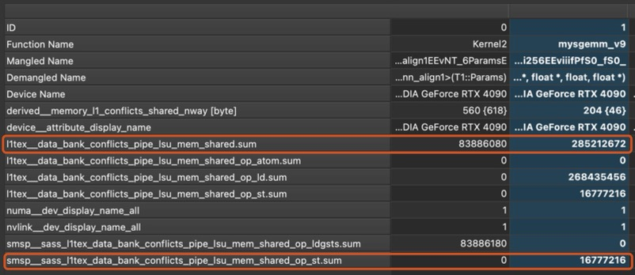
There’re good resources explaining what bank conflicts are, here’s how I understand it. Remember when we discussed vectorization, I said that in CUDA, all global memory access are done in 32-, 64-, or 128-byte transactions? Turns out that a different access constraint is applied on shared memory access.
In CUDA, every shared memory access is done via a memory “bank” (think of it as an access point with 32-bit bandwidth per cycle). There’re 32 banks in shared memory for all SMs. The bank that a certain memory access goes through is determined by
\[ \text{Bank ID} = \lfloor(\text{Addr} \% 128) / 4\rfloor \]
where we assume the memory is byte-addressable. The 32 banks correspond to 32 threads in a warp, so the best pattern for arrange shared memory access is one where each thread access a different 4-byte (32 bits) in a 128-byte aligned consecutive 128-byte chunk of shared memory.
{kind=link}
Looking at the way the kernel writes to shared memory, there’s clearly bank conflicts, as shown below
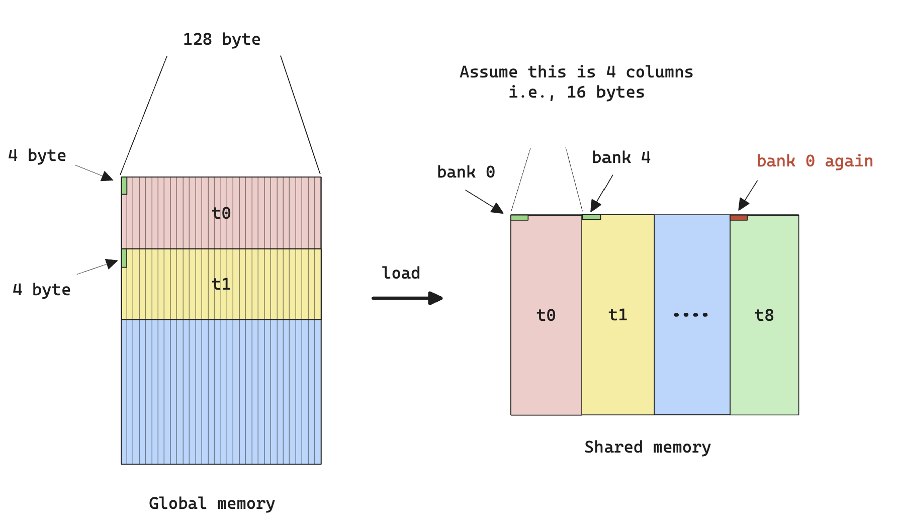
From the perspective of memory banks, it’s called a 4-way bank conflict since each bank has 4 threads accessing it.
Also note that the bank conflict happens not only during write to shared memory, but also during read from shared memory.
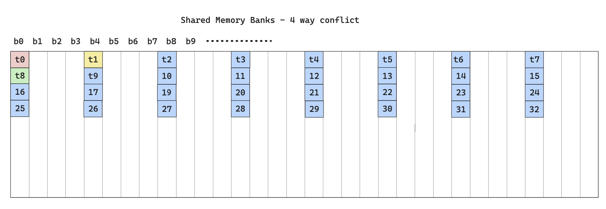
To solve this, we can use something called swizzle, which is a way to rearrange bank access such that all banks are utilized in all iterations.
The following diagram illustrates the idea.
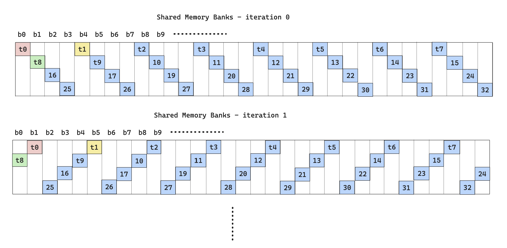
To actually implement swizzle is as follows:
For \(N\)-way bank conflict, if we conceptualize a particular memory operation to be 2 mappings
One map from memory address to Bank ID and is given by
\[ \text{Bank ID}(\text{Addr}_t) = f(\text{Addr}_t) = \lfloor(\text{Addr}_t \% 128) / 4\rfloor \]
where the subscript indicates the memory address is requested from thread \(t\)
One map from Bank ID and thread ID to bank row (n-th thread to access a particular bank), and is given by
\[ \text{Bank Row}(t, \text{Addr}_t) = \sum_{i=0}^{t-1}1\cdot (\text{Bank ID}(\text{Addr}_i) = \text{Bank ID}(\text{Addr}_t)) \]
We can then use the XOR operator to create a new mapping from \((\text{Bank ID, Bank Row}) \rightarrow \text{Swizzled Bank ID}\). We can do this because the group of \(({0, ...,2^{n}}, \text{XOR})\) is a closed group and the mapping is bijective.
\[ \text{Swizzled ID} = \text{Bank Row} \oplus \text{Bank ID} \]
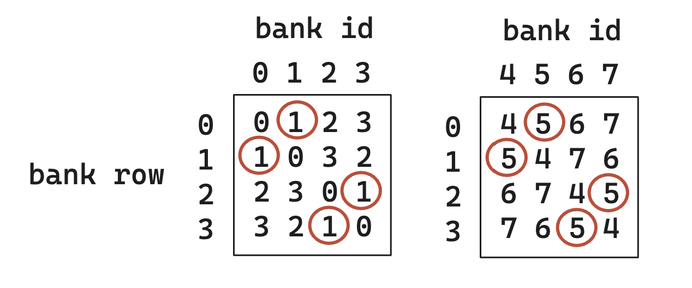
Diagram illustrating desired swizzle operation, notice how each initial bank id gets mapped to a possibly different swizzled bank id without conflict, and that any bank id is only accessed once in each row. Also note that this swizzle operation can be applied where bank row and bank id are not necessarily the same set of numbers. After obtaining the new bank id, convert it back to memory address with
\[ \text{Swizzled Addr} = f^{-1}(\text{Swizzled Bank ID}) \]
Note that to calculate \(f^{-1}\), we often need more parameters than just the new bank id because \(f\) is not bijective.
After obtaining the memory address, the write to and read from shared memory should share the same swizzle pattern to ensure correctness.
After applying swizzle to the share memory read operation (due to time constraint, I didn’t apply to memory store), and rerun the profiling
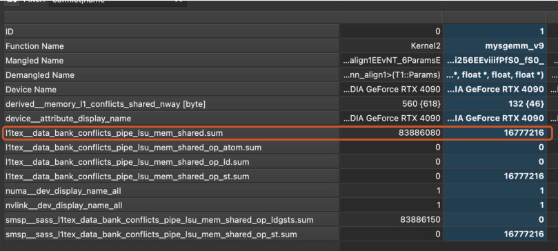
However, the performance is completely disastrous
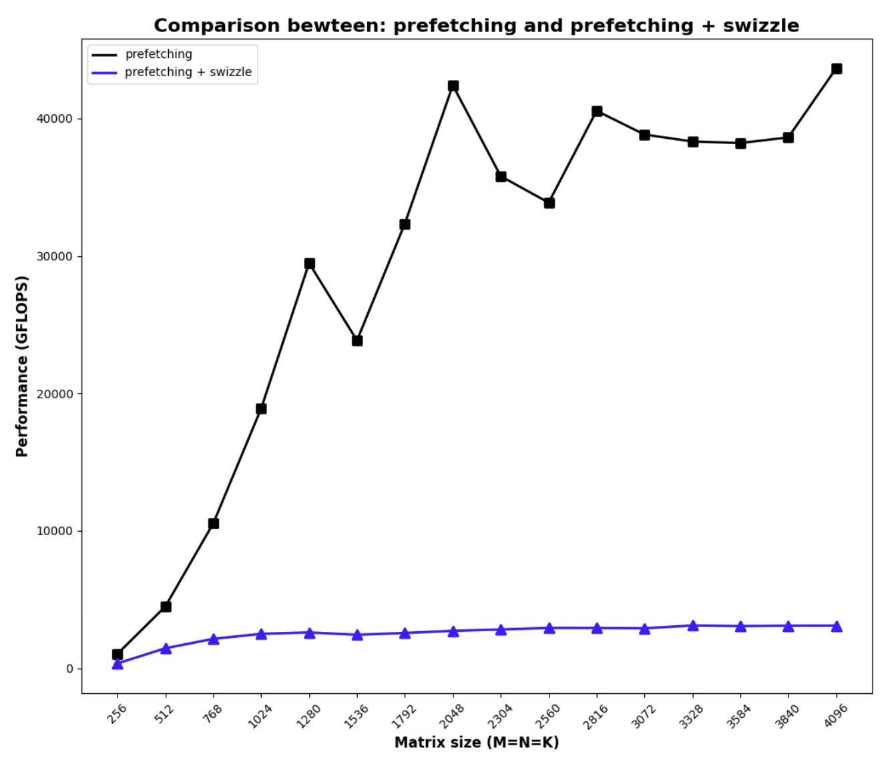
The reason that this happens, despite little bank conflicts, is due to the fact that the swizzling algorithm only works if all the threads being considered come from the same warp, so in an implementation where we don’t distinguish warps (we are just doing 2-D thread tiling within a block), the result from swizzling is neural at best, at worst it causes significant non-coalesced memory access. The result shown above indicates the latter is at play.
Now we have a proper motivation for warp tiling.
code for swizzle, relevant parts are highlighted
#pragma once #include <cuda_runtime.h> #include <cublas_v2.h> #include <stdio.h> #include <stdlib.h> #ifndef FETCH_FLOAT4 #define FETCH_FLOAT4(pointer) (reinterpret_cast<float4 *>(&(pointer))[0]) #endif #ifndef DIV_UP #define DIV_UP(m, n) ((m + n - 1) / n) #endif #define GROUP_SIZE 8 #define WARP_SIZE 32 namespace kernel9 { template<int BM, int BN, int BK> __device__ __forceinline__ void gmem_to_smem(float *A, float *B, float smem_a[][BK][BM], float smem_b[][BK][BN], float ldreg_a[][4], float ldreg_b[][4], int a_smem_rounds, int a_stride, int a_smem_x, int a_smem_y, int b_smem_rounds, int b_stride, int b_smem_y, int b_smem_x, int phase) { #pragma unroll // A: global -> reg buffer for (int i = 0; i < a_smem_rounds; ++i) { FETCH_FLOAT4(ldreg_a[i]) = FETCH_FLOAT4(A[i * a_stride]); // int bank_id = a_smem_y; // int bank_row = tid * BK / 128; // int swizzled_a_smem_y = a_smem_y + bank_row * WARP_SIZE * 4 / BK; smem_a[phase][a_smem_x][a_smem_y + i * a_stride] = ldreg_a[i][0]; smem_a[phase][a_smem_x + 1][a_smem_y + i * a_stride] = ldreg_a[i][1]; smem_a[phase][a_smem_x + 2][a_smem_y + i * a_stride] = ldreg_a[i][2]; smem_a[phase][a_smem_x + 3][a_smem_y + i * a_stride] = ldreg_a[i][3]; } #pragma unroll // B: global -> reg buffer for (int i = 0; i < b_smem_rounds; ++i) { FETCH_FLOAT4(ldreg_b[i]) = FETCH_FLOAT4(B[i * b_stride]); FETCH_FLOAT4(smem_b[phase][b_smem_y][b_smem_x + i * b_stride]) = FETCH_FLOAT4(ldreg_b[i]); } } __device__ __forceinline__ void gmem_to_reg(float *A, float *B, float ldreg_a[][4], float ldreg_b[][4], int a_smem_rounds, int a_stride, int b_smem_rounds, int b_stride) { #pragma unroll // A: global -> reg buffer for (int i = 0; i < a_smem_rounds; ++i) { FETCH_FLOAT4(ldreg_a[i]) = FETCH_FLOAT4(A[i * a_stride]); } #pragma unroll // B: global -> reg buffer for (int i = 0; i < b_smem_rounds; ++i) { FETCH_FLOAT4(ldreg_b[i]) = FETCH_FLOAT4(B[i * b_stride]); } } template<int BM, int BN, int BK> __device__ __forceinline__ void reg_to_smem(float smem_a[][BK][BM], float smem_b[][BK][BN], float ldreg_a[][4], float ldreg_b[][4], int a_smem_rounds, int a_stride, int a_smem_x, int a_smem_y, int b_smem_rounds, int b_stride, int b_smem_y, int b_smem_x, int phase) { #pragma unroll // A: reg buffer -> smem for (int i = 0; i < a_smem_rounds; ++i) { // note that this is uncoalesce memory write, and only 4 floats * 4 byte/float = 16 bytes per write smem_a[phase][a_smem_x][a_smem_y + i * a_stride] = ldreg_a[i][0]; smem_a[phase][a_smem_x + 1][a_smem_y + i * a_stride] = ldreg_a[i][1]; smem_a[phase][a_smem_x + 2][a_smem_y + i * a_stride] = ldreg_a[i][2]; smem_a[phase][a_smem_x + 3][a_smem_y + i * a_stride] = ldreg_a[i][3]; } #pragma unroll // B: reg buffer -> smem for (int i = 0; i < b_smem_rounds; ++i) { FETCH_FLOAT4(smem_b[phase][b_smem_y][b_smem_x + i * b_stride]) = FETCH_FLOAT4(ldreg_b[i]); } } template<int BM, int BN, int BK, int TM, int TN> __device__ __forceinline__ void smem_to_frag(float frag_a[][TM], float frag_b[][TN], float smem_a[][BK][BM], float smem_b[][BK][BN], int frag_phase, int smem_phase, int bk) { #pragma unroll for (int i = 0; i < TM; i += 4) { int tmp = (threadIdx.y * TM + i); tmp = ((tmp / WARP_SIZE) ^ ((tmp % WARP_SIZE) / 4)) % 2 * 4; FETCH_FLOAT4(frag_a[frag_phase][tmp]) = FETCH_FLOAT4(smem_a[smem_phase][bk][threadIdx.y * TM + tmp]); } #pragma unroll for (int i = 0; i < TN; i += 4) { int tmp = (threadIdx.x * TN + i); tmp = ((tmp / WARP_SIZE) ^ ((tmp % WARP_SIZE) / 4)) % 2 * 4; FETCH_FLOAT4(frag_b[frag_phase][tmp]) = FETCH_FLOAT4(smem_b[smem_phase][bk][threadIdx.x * TN + tmp]); } } } // namespace kernel 9 // This function assumes B is already transposed template <const int BM, const int BN, const int BK, const int TM, const int TN, const int THREAD_NUMS> __global__ void __launch_bounds__(THREAD_NUMS, 2) mysgemm_v9(int M, int N, int K, float alpha, float *A, float *B, float beta, float *C) { int bx = blockIdx.x; int by = blockIdx.y; constexpr int threads_per_block = BM / TM * BN / TN; constexpr int a_ele_per_thread_smem = BM * BK / threads_per_block; constexpr int b_ele_per_thread_smem = BK * BN / threads_per_block; constexpr int a_smem_rounds = a_ele_per_thread_smem / 4; constexpr int b_smem_rounds = b_ele_per_thread_smem / 4; constexpr int a_threads_per_row_per_round = BK / 4; int a_stride = threads_per_block / a_threads_per_row_per_round * K; constexpr int b_threads_per_row_per_round = BN / 4; int b_stride = threads_per_block / b_threads_per_row_per_round * N; int tid = threadIdx.y * blockDim.x + threadIdx.x; // int lane_id = tid % 32; int a_smem_x = (tid % a_threads_per_row_per_round) * 4; int a_smem_y = tid / a_threads_per_row_per_round; int b_smem_x = (tid % b_threads_per_row_per_round) * 4; int b_smem_y = tid / b_threads_per_row_per_round; static_assert((BM * BK) % threads_per_block == 0); static_assert((BK * BN) % threads_per_block == 0); static_assert(a_ele_per_thread_smem % 4 == 0); static_assert(b_ele_per_thread_smem % 4 == 0); static_assert(BK % 4 == 0); static_assert(BN % 4 == 0); static_assert(threads_per_block / a_threads_per_row_per_round >= 1); // at least cover a row per round static_assert(threads_per_block / b_threads_per_row_per_round >= 1); // at least cover a row per round static_assert(TN % 4 == 0); // at least 4 elements per thread and TN is a multiple of 4 float accum[TM][TN] = {0.}; __shared__ float smem_a[2][BK][BM]; // a transposed version of A block __shared__ float smem_b[2][BK][BN]; // register for loading from global mem to smem float ldreg_a[a_smem_rounds][4]; float ldreg_b[b_smem_rounds][4]; // fragment/register for computation float frag_a[2][TM]; float frag_b[2][TN]; // move A to thread start A = &A[by * BM * K + a_smem_y * K + a_smem_x]; B = &B[b_smem_y * N + bx * BN + b_smem_x]; // 1.1 fetch from global to smem, use register as buffer kernel9::gmem_to_smem<BM, BN, BK>(A, B, smem_a, smem_b, ldreg_a, ldreg_b, a_smem_rounds, a_stride, a_smem_x, a_smem_y, b_smem_rounds, b_stride, b_smem_y, b_smem_x, 0); __syncthreads(); // need the sync such that the following fragment can be obtained // 1.2 load 0 round of smem->frag kernel9::smem_to_frag<BM, BN, BK, TM, TN>(frag_a, frag_b, smem_a, smem_b, 0, 0, 0); // load first batch of frag from first block of smem int smem_write_index = 1; // next index of smems to write to int smem_read_index; // read is current write // 2. start the blockwise loop for (int k = 0; k < K / BK ; ++k) { // 2.0 fetch from global to smem, use register as buffer if (k + 1 < K / BK) { A += BK; // every iteration, A moves BK to the right B += N * BK; // every iteration, B moves BK * N down kernel9::gmem_to_reg(A, B, ldreg_a, ldreg_b, a_smem_rounds, a_stride, b_smem_rounds, b_stride); // only load to reg, this is non-blocking } // 2.1 use the frag already loaded to compute the outer product, note that we do register prefetching here smem_read_index = smem_write_index ^ 1; #pragma unroll for (int b_k = 1; b_k < BK; ++b_k) // load one sub row at a time from smem to frag { kernel9::smem_to_frag<BM, BN, BK, TM, TN>(frag_a, frag_b, smem_a, smem_b, b_k % 2, smem_read_index, b_k); #pragma unroll for (int i = 0; i < TM; ++i) { // outer product for the previous prefetched frag #pragma unroll for (int j = 0; j < TN; ++j) { accum[i][j] += frag_a[(b_k - 1) % 2][i] * frag_b[(b_k - 1) % 2][j]; } } } // 2.2 if there's next block, start loading from reg to smem if (k + 1 < K / BK) { kernel9::reg_to_smem<BM, BN, BK>(smem_a, smem_b, ldreg_a, ldreg_b, a_smem_rounds, a_stride, a_smem_x, a_smem_y, b_smem_rounds, b_stride, b_smem_y, b_smem_x, smem_write_index); __syncthreads(); // prefetch a round of fragments from the current write, this will be blocking kernel9::smem_to_frag<BM, BN, BK, TM, TN>(frag_a, frag_b, smem_a, smem_b, 0, smem_write_index, 0); smem_write_index ^= 1; // update next write } #pragma unroll for (int i = 0; i < TM; ++i) { // one last round of outer product because we have only done BK - 1 products #pragma unroll for (int j = 0; j < TN; ++j) { accum[i][j] += frag_a[(BK - 1) % 2][i] * frag_b[(BK - 1) % 2][j]; } } } // 3. put the accumulate value down to C // move C to thread tile start C = &C[(by * BM + threadIdx.y * TM) * N + bx * BN + threadIdx.x * TN]; #pragma unroll for (int i = 0; i < TM; ++i) { #pragma unroll for (int j = 0; j < TM; j += 4) { float4 tmp = FETCH_FLOAT4(C[i * N + j]); tmp.x = alpha * accum[i][j] + beta * tmp.x; tmp.y = alpha * accum[i][j + 1] + beta * tmp.y; tmp.z = alpha * accum[i][j + 2] + beta * tmp.z; tmp.w = alpha * accum[i][j + 3] + beta * tmp.w; FETCH_FLOAT4(C[i * N + j]) = tmp; } } }
Warp Tiling
Warp tiling, as the name suggests, is basically tiling at the warp level. Here’s the visual for the algorithm:
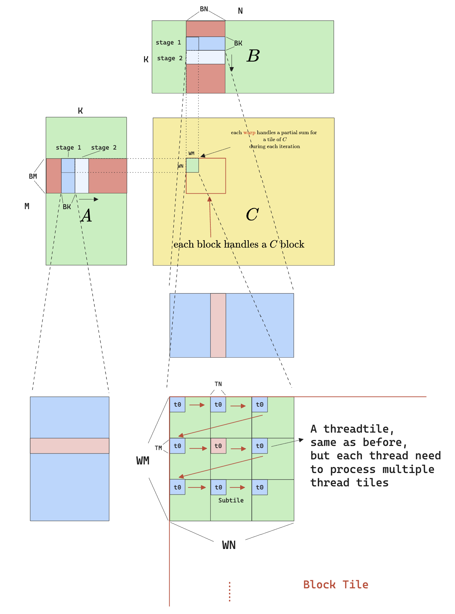
The idea is that instead of treating threads in a block as equivalent, we distinguish them by which warp they come from. Therefore each warp now handles a larger tile (warp tile). To give flexibility to the selection of warp tile sizes, while allowing for the selection of thread tile sizes, we have to allow each thread to process more than one thread tile. Therefore each warp tile is further divided into multiple “subtile”, where each subtile consists of \(32 \times \text{TM}\times\text{TN}\) elements, meaning for each subtile to be calculated, all 32 threads needs to calculate only once. But to fill a whole warp tile, all 32 threads need to move from one subtile to another, causing the zig-zag movement seen above.
There’re many benefit to this approach:
- Having the concept of warp tiling allows us to do effective swizzle.
- A strided memory access pattern (from a thread’s perspective) allows for coalesced memory access.
- Most importantly, because we are doing more work per thread (9 thread-tiles per thread, in the example), we are again increasing the arithmetic intensity!
- From shared memory’s perspective, processing each \(TM\times TN\) elements still requires \(2K\) reads from shared memory
- But from device memory’s perspective, processing each \(\#\text{subtiles}\times TM \times TN\) elements only requires \(\text{sm}\times TM \times K + \text{sn}\times TN \times K\) reads from global memory, meaning the arithmetic intensity is now
I’ll leave the calculation for the arithmetic intensity improvement to the reader.
After implementing the warp tiling algorithm, this is the result:
Note that there’re a few design decisions I made after experiments:
I intentionally didn’t implement buffering/prefetching/pipelining, because doing so increases the required shared memory per block, the reduction of occupancy caused a bigger issue than the benefit of prefetching.
Due to time constraint, I didn’t implement swizzling on this kernel, but because of the strided access pattern, I’m only suffering from 2-way bank conflict, which was acceptable for me.
The code
#pragma once #include <algorithm> #include <cassert> #include <cstdio> #include <cstdlib> #include <cublas_v2.h> #include <cuda_runtime.h> #ifndef FETCH_FLOAT4 #define FETCH_FLOAT4(pointer) (reinterpret_cast<float4 *>(&(pointer))[0]) #endif #ifndef FETCH_FLOAT4_CONST #define FETCH_FLOAT4_CONST(pointer) (reinterpret_cast<const float4 *>(&(pointer))[0]) #endif #define GROUP_SIZE 8 #define WARP_SIZE 32 namespace kernel10 { template<int BM, int BN, int BK, int lda_m_stride, int ldb_k_stride> __device__ __forceinline__ void gmem_to_smem(const float * A, const float * B, int M, int N, int K, float * smem_a, float * smem_b) { // #pragma unroll // A: global -> reg buffer for (uint i = 0; i + lda_m_stride <= BM; i += lda_m_stride) { const float4 tmp = FETCH_FLOAT4_CONST(A[i * K]); smem_a[i] = tmp.x; smem_a[BM + i] = tmp.y; smem_a[2 * BM + i] = tmp.z; smem_a[3 * BM + i] = tmp.w; } // #pragma unroll // B: global -> reg buffer for (uint i = 0; i + ldb_k_stride <= BK; i += ldb_k_stride) { FETCH_FLOAT4(smem_b[i * BN]) = FETCH_FLOAT4_CONST(B[i * N]); } } template <const int BM, const int BN, const int BK, const int WM, const int WN, const int TM, const int TN, const int WM_SUBTILE, const int WN_SUBTILE, const int m_subtiles, const int n_subtiles> __device__ __forceinline__ void warp_matmul(const float *smem_a, const float *smem_b, float *acc, float *frag_a, float *frag_b) { // #pragma unroll for (uint k = 0; k < BK; ++k) { // #pragma unroll for (uint i = 0; i < m_subtiles; ++i) { // #pragma unroll for (uint m = 0; m < TM; m+=1) { frag_a[i * TM + m] = smem_a[k * BM + i * WM_SUBTILE + m]; } } // #pragma unroll for (uint i = 0; i < n_subtiles; ++i) { // #pragma unroll for (uint n = 0; n < TN; n+=1) { frag_b[i * TN + n] = smem_b[k * BN + i * WN_SUBTILE + n]; } } // #pragma unroll for (uint i = 0; i < m_subtiles; ++i) { // #pragma unroll for (uint j = 0; j < n_subtiles; ++j) { // #pragma unroll for (uint m = 0; m < TM; ++m) { // #pragma unroll for (uint n = 0; n < TN; ++n) { acc[(i * TM + m) * n_subtiles * TN + j * TN + n] += frag_a[i * TM + m] * frag_b[j * TN + n]; } } } } } } } // namespace kernel 10 // WARP tiling without double cache, performing C = alpha * A * B + beta * C template <const int BM, const int BN, const int BK, const int WM, const int WN, const int TM, const int TN, const int WM_SUBTILE, const int WN_SUBTILE, const int NUM_THREADS, const int lda_m_stride, const int ldb_k_stride, const int m_subtiles, const int n_subtiles > __global__ void __launch_bounds__(NUM_THREADS, 3) mysgemm_v10(int M, int N, int K, float alpha, float *A, float *B, float beta, float *C) { // every thread loads 4 floats at a time in stride-fashion const uint warp_m_offset = (threadIdx.x / WARP_SIZE) / (BN / WN) * WM; const uint warp_n_offset = (threadIdx.x / WARP_SIZE) % (BN / WN) * WN; const uint m_idx_a = threadIdx.x * 4 / BK; const uint k_idx_a = threadIdx.x % (BK / 4) * 4; const uint k_idx_b = threadIdx.x * 4 / BN; const uint n_idx_b = threadIdx.x % (BN / 4) * 4; const uint subtile_idx_m = (threadIdx.x % WARP_SIZE) / (WN_SUBTILE / TN) * TM; const uint subtile_idx_n = (threadIdx.x % WARP_SIZE) % (WN_SUBTILE / TN) * TN; static_assert(lda_m_stride > 0, "lda_m_stride must be positive to ensure uniform strides"); static_assert(ldb_k_stride > 0, "ldb_k_stride must be positive to ensure uniform strides"); // declare shared memory __shared__ float smem_a[BK * BM]; // transposed __shared__ float smem_b[BK * BN]; A += blockIdx.y * BM * K + m_idx_a * K + k_idx_a; B += blockIdx.x * BN + k_idx_b * N + n_idx_b; // move C to the warp start C += (blockIdx.y * BM + warp_m_offset + subtile_idx_m) * N + blockIdx.x * BN + warp_n_offset + subtile_idx_n; // move A and B to thread start for loading, this has nothing to do with warps // declare accumulators float acc[m_subtiles * n_subtiles * TM * TN] = {0.}; // declare fragments float frag_a[m_subtiles * TM] = {0.}; float frag_b[n_subtiles * TN] = {0.}; // #pragma unroll for (uint k = 0; k < K; k += BK) { kernel10::gmem_to_smem<BM, BN, BK, lda_m_stride, ldb_k_stride>(A, B, M, N, K, smem_a + k_idx_a * BM + m_idx_a, smem_b + k_idx_b * BN + n_idx_b); __syncthreads(); // compute the warp level matmul kernel10::warp_matmul<BM, BN, BK, WM, WN, TM, TN, WM_SUBTILE, WN_SUBTILE, m_subtiles, n_subtiles>(smem_a + warp_m_offset + subtile_idx_m, smem_b + + warp_n_offset + subtile_idx_n, acc, frag_a, frag_b); A += BK; B += BK * N; __syncthreads(); } // reduce for (uint i = 0; i < m_subtiles; ++i) { for (uint j = 0; j < n_subtiles; ++j) { // move C to the subtile start float *C_subtile = C + i * WM_SUBTILE * N + j * WN_SUBTILE; // #pragma unroll for (uint m = 0; m < TM; m += 1) { // #pragma unroll for (uint n = 0; n < TN; n += 4) { float4 tmp = FETCH_FLOAT4( C_subtile[m * N + n]); const int acc_offset = (i * TM + m) * n_subtiles * TN + j * TN + n; tmp.x = alpha * acc[acc_offset] + beta * tmp.x; tmp.y = alpha * acc[acc_offset + 1] + beta * tmp.y; tmp.z = alpha * acc[acc_offset + 2] + beta * tmp.z; tmp.w = alpha * acc[acc_offset + 3] + beta * tmp.w; FETCH_FLOAT4(C_subtile[m * N + n]) = tmp; } } } } }
Split-K
Comparing the kernel I wrote with CuBLAS, I noticed how the grid dim of CuBLAS has a third dimension (the (256, 2, 3) number). This suggest that the CuBLAS implementation is also splitting the matmul problem along the K dimension.
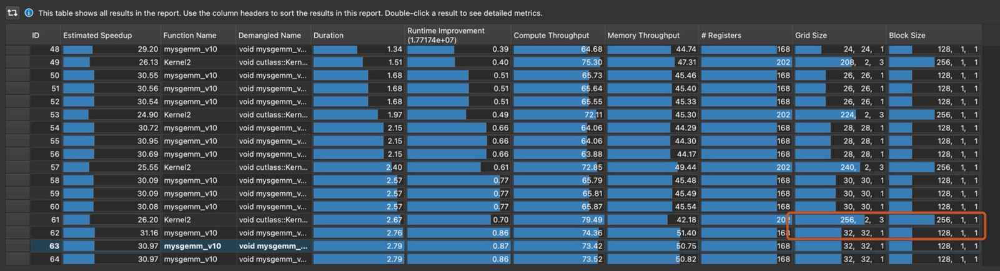
The idea with split-K is as follows:
- As opposed to having each block, each warp, each thread iterating throughout the dimension K, we split the K dimension among blocks, so each block only computes a partial result.
- After computing a partial result, we kick off another reduction kernel that merges all the partial result together.
- The hope is that by increasing the number of blocks, we further increase occupancy and this benefit is hopefully larger than the additional overhead that the reduction kernel brings.
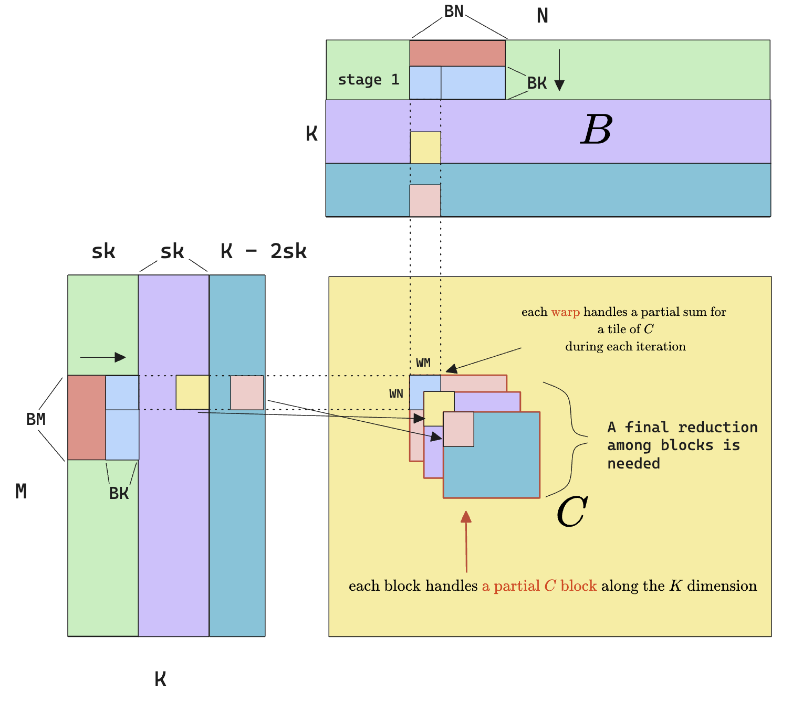
After implementing the split-K algorithm, here’s the performance I got:
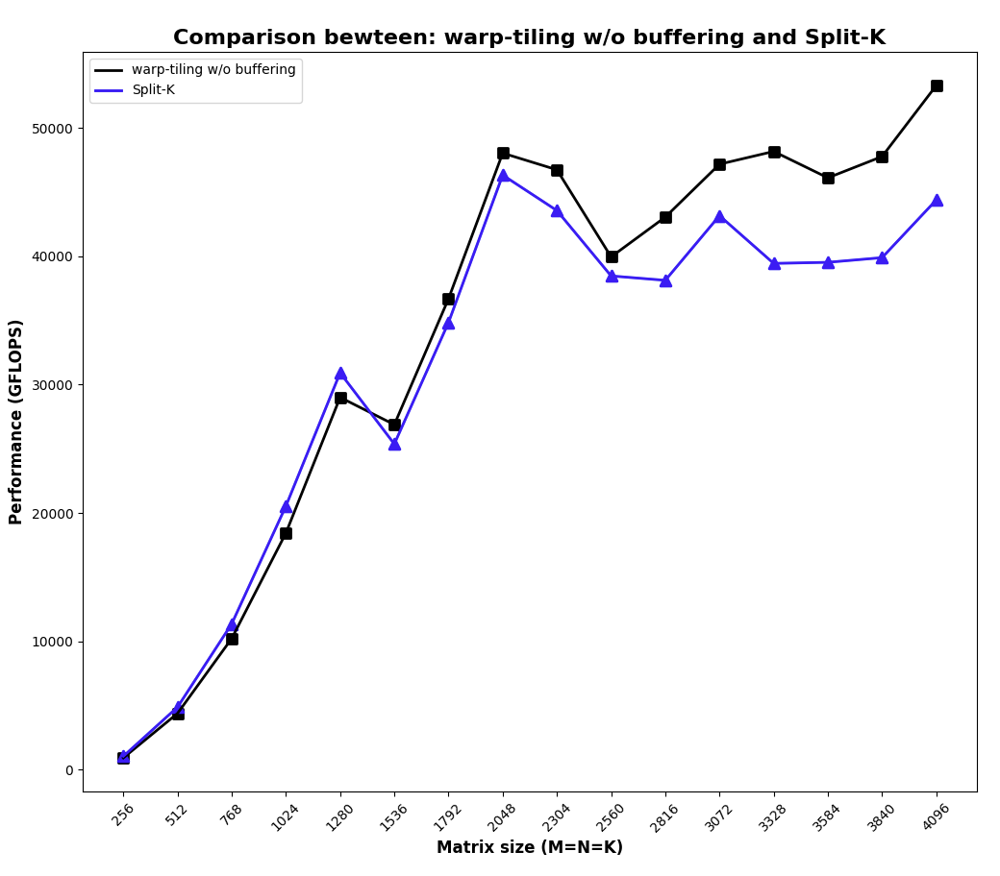
Huh? It got worse than plain warp-tiling. After some tinkering (changing dimensions, etc.), I think the reason for the worse performance is possibly:
- I haven’t run a complete sweep of hyper-parameters of this kernel, which is what CuBLAS surely did.
- I’m using the kernel launch as an inter-block synchronization primitive (basically, calling the reduction kernel after the computation kernel in the same stream), but ideally, reduction can also happen in a block-by-block fashion, where as long as a set of blocks that cover the entire K dimension has finished calculation, a reduction kernel can be kicked off along that dimension. I’m not sure how to achieve this though, because afaik CUDA doesn’t have any other inter-block synchronization primitive than kernel launching.
- I’m not using fancy things like stream-k.
- I’m too exhausted to do a proper swizzle on this kernel.
But anyway, I’m happy that the split-K get implemented and is functionally correct. Here’s the code.
Code for Split-k
#pragma once #include <algorithm> #include <cassert> #include <cstdio> #include <cstdlib> #include <cublas_v2.h> #include <cuda_runtime.h> #include <cooperative_groups.h> #include <cooperative_groups/memcpy_async.h> #include <cooperative_groups/reduce.h> #include <cuda/barrier> #include <cuda/pipeline> namespace cg = cooperative_groups; #ifndef FETCH_FLOAT4 #define FETCH_FLOAT4(pointer) (reinterpret_cast<float4 *>(&(pointer))[0]) #endif #ifndef FETCH_FLOAT4_CONST #define FETCH_FLOAT4_CONST(pointer) (reinterpret_cast<const float4 *>(&(pointer))[0]) #endif #ifndef DIV_UP #define DIV_UP(m, n) (((m) + (n) - 1) / (n)) #endif #define GROUP_SIZE 8 #define WARP_SIZE 32 namespace kernel11 { template<int BM, int BN, int BK, int lda_m_stride, int ldb_k_stride> __device__ __forceinline__ void gmem_to_smem(const float * A, const float * B, int M, int N, int K, float * smem_a, float * smem_b) { // #pragma unroll // A: global -> reg buffer for (uint i = 0; i + lda_m_stride <= BM; i += lda_m_stride) { const float4 tmp = FETCH_FLOAT4_CONST(A[i * K]); smem_a[i] = tmp.x; smem_a[BM + i] = tmp.y; smem_a[2 * BM + i] = tmp.z; smem_a[3 * BM + i] = tmp.w; } // #pragma unroll // B: global -> reg buffer for (uint i = 0; i + ldb_k_stride <= BK; i += ldb_k_stride) { FETCH_FLOAT4(smem_b[i * BN]) = FETCH_FLOAT4_CONST(B[i * N]); } } template <const int BM, const int BN, const int BK, const int WM, const int WN, const int TM, const int TN, const int WM_SUBTILE, const int WN_SUBTILE, const int m_subtiles, const int n_subtiles> __device__ void warp_matmul(const float *smem_a, const float *smem_b, float *acc, float *frag_a, float *frag_b, int warp_m_offset, int subtile_idx_m, int warp_n_offset, int subtile_idx_n) { smem_a += warp_m_offset + subtile_idx_m; smem_b += warp_n_offset + subtile_idx_n; // #pragma unroll for (uint k = 0; k < BK; ++k) { // #pragma unroll for (uint i = 0; i < m_subtiles; ++i) { // #pragma unroll // for (uint m = 0; m < TM; m+=4) { // FETCH_FLOAT4(frag_a[i * TM + m]) = FETCH_FLOAT4_CONST(smem_a[k * BM + i * WM_SUBTILE + m]); // } // #pragma unroll for (uint m = 0; m < TM; m+=1) { frag_a[i * TM + m] = smem_a[k * BM + i * WM_SUBTILE + m]; } } // #pragma unroll for (uint i = 0; i < n_subtiles; ++i) { // #pragma unroll // for (uint n = 0; n < TN; n+=4) { // FETCH_FLOAT4(frag_b[i * TN + n]) = FETCH_FLOAT4_CONST(smem_b[k * BN + i * WN_SUBTILE + n]); // } // #pragma unroll for (uint n = 0; n < TN; n+=1) { frag_b[i * TN + n] = smem_b[k * BN + i * WN_SUBTILE + n]; } } // #pragma unroll for (uint i = 0; i < m_subtiles; ++i) { // #pragma unroll for (uint j = 0; j < n_subtiles; ++j) { // #pragma unroll for (uint m = 0; m < TM; ++m) { // #pragma unroll for (uint n = 0; n < TN; ++n) { acc[(i * TM + m) * n_subtiles * TN + j * TN + n] += frag_a[i * TM + m] * frag_b[j * TN + n]; } } } } } } } // namespace kernel 11 // WARP tiling without double cache, performing C = alpha * A * B + beta * C template <const int BM, const int BN, const int BK, const int SPLIT, const int WM, const int WN, const int TM, const int TN, const int WM_SUBTILE, const int WN_SUBTILE, const int NUM_THREADS, const int lda_m_stride, const int ldb_k_stride, const int m_subtiles, const int n_subtiles > __global__ void __launch_bounds__(NUM_THREADS, 2) mysgemm_v11(int M, int N, int K, float alpha, float *A, float *B, float beta, float *tC, float *C) { // The strided split K can be visualized as follows: // ┌────────┬────────┬────────┬────────┬────────┬────────┬────────┐ // │ │ │ │ │ │ │ │ // │ split0 │ split1 │ split0 │ split1 │ split0 │ split1 │ split0 │ // │ │ │ │ │ │ │ │ // │ block0 │ block1 │ block2 │ block3 │ block4 │ block5 │ block6 │ // │ │ │ │ │ │ │ │ // └────────┴────────┴────────┴────────┴────────┴────────┴────────┘ // The reason for strided splits is that different splits handle BKs in a strided fashion to improve L2 cache hit rate. // Note that there might be remainder blocks left causing imbalanced processing across CTAs, this can be handled via stream-K (https://arxiv.org/pdf/2301.03598), but here we'll just ignore (the imbalance) and process it anyway. // To assist reduction, it's better to store the output from different splits together: // ┌─────────────────────┐ // │ unit0 - split0 │ // ├─────────────────────┤ // │ unit0 - split1 │ // ├─────────────────────┤ // │ unit1 - split0 │ // ├─────────────────────┤ // │ unit1 - split0 │ // └─────────────────────┘ const uint iters_per_split = DIV_UP(K, BK) / SPLIT; // number of BKs a split handles (at least) const uint last_iter_splits = DIV_UP(K, BK) % SPLIT; // every thread loads 4 floats at a time in stride-fashion const uint warp_m_offset = (threadIdx.x / WARP_SIZE) / (BN / WN) * WM; const uint warp_n_offset = (threadIdx.x / WARP_SIZE) % (BN / WN) * WN; const uint m_idx_a = threadIdx.x * 4 / BK; const uint k_idx_a = threadIdx.x % (BK / 4) * 4; const uint k_idx_b = threadIdx.x * 4 / BN; const uint n_idx_b = threadIdx.x % (BN / 4) * 4; const uint subtile_idx_m = (threadIdx.x % WARP_SIZE) / (WN_SUBTILE / TN) * TM; const uint subtile_idx_n = (threadIdx.x % WARP_SIZE) % (WN_SUBTILE / TN) * TN; static_assert(lda_m_stride > 0, "lda_m_stride must be positive to ensure uniform strides"); static_assert(ldb_k_stride > 0, "ldb_k_stride must be positive to ensure uniform strides"); // declare shared memory __shared__ float smem_a[BK * BM]; // transposed __shared__ float smem_b[BK * BN]; // move A and B to thread start for loading, this has nothing to do with warps A += blockIdx.y * BM * K + m_idx_a * K + k_idx_a + blockIdx.z * BK; B += blockIdx.x * BN + k_idx_b * N + n_idx_b + blockIdx.z * BK * N; // move tC to the warp start, tC is the temporary gmem to store splits results tC += ((blockIdx.y * BM + warp_m_offset + subtile_idx_m) * N + blockIdx.x * BN + warp_n_offset + subtile_idx_n) * SPLIT; // move C to the warp start as well C += (blockIdx.y * BM + warp_m_offset + subtile_idx_m) * N + blockIdx.x * BN + warp_n_offset + subtile_idx_n; // declare accumulators float acc[m_subtiles * n_subtiles * TM * TN] = {0.}; // declare fragments float frag_a[m_subtiles * TM] = {0.}; float frag_b[n_subtiles * TN] = {0.}; // #pragma unroll for (uint it = 0; it < iters_per_split; ++it) { kernel11::gmem_to_smem<BM, BN, BK, lda_m_stride, ldb_k_stride>(A, B, M, N, K, smem_a + k_idx_a * BM + m_idx_a, smem_b + k_idx_b * BN + n_idx_b); __syncthreads(); // compute the warp level matmul kernel11::warp_matmul<BM, BN, BK, WM, WN, TM, TN, WM_SUBTILE, WN_SUBTILE, m_subtiles, n_subtiles>(smem_a, smem_b, acc, frag_a, frag_b, warp_m_offset, subtile_idx_m, warp_n_offset, subtile_idx_n); A += BK * SPLIT; B += BK * SPLIT * N; __syncthreads(); } if (last_iter_splits > 0 && blockIdx.z < last_iter_splits) { // process last iteration kernel11::gmem_to_smem<BM, BN, BK, lda_m_stride, ldb_k_stride>(A, B, M, N, K, smem_a + k_idx_a * BM + m_idx_a, smem_b + k_idx_b * BN + n_idx_b); __syncthreads(); // compute the warp level matmul kernel11::warp_matmul<BM, BN, BK, WM, WN, TM, TN, WM_SUBTILE, WN_SUBTILE, m_subtiles, n_subtiles>(smem_a, smem_b, acc, frag_a, frag_b, warp_m_offset, subtile_idx_m, warp_n_offset, subtile_idx_n); __syncthreads(); } // epilogue: reduce to (temporary) gmem for (uint i = 0; i < m_subtiles; ++i) { for (uint j = 0; j < n_subtiles; ++j) { // move C to the subtile start float *C_subtile = C + (i * WM_SUBTILE * N + j * WN_SUBTILE); float *tC_subtile = tC + (i * WM_SUBTILE * N + j * WN_SUBTILE) * SPLIT; // #pragma unroll for (uint m = 0; m < TM; m += 1) { // #pragma unroll for (uint n = 0; n < TN; n += 4) { const int acc_offset = (i * TM + m) * n_subtiles * TN + j * TN + n; if (blockIdx.z == 0) { // only the first block in that split should accumulate from original C matrix float4 tmp = FETCH_FLOAT4(C_subtile[m * N + n]); tmp.x = alpha * acc[acc_offset] + beta * tmp.x; tmp.y = alpha * acc[acc_offset + 1] + beta * tmp.y; tmp.z = alpha * acc[acc_offset + 2] + beta * tmp.z; tmp.w = alpha * acc[acc_offset + 3] + beta * tmp.w; tC_subtile[m * N * SPLIT + n * SPLIT] = tmp.x; tC_subtile[m * N * SPLIT + (n + 1) * SPLIT] = tmp.y; tC_subtile[m * N * SPLIT + (n + 2) * SPLIT] = tmp.z; tC_subtile[m * N * SPLIT + (n + 3) * SPLIT] = tmp.w; } else { tC_subtile[m * N * SPLIT + n * SPLIT + blockIdx.z] = alpha * acc[acc_offset]; tC_subtile[m * N * SPLIT + (n + 1) * SPLIT + blockIdx.z] = alpha * acc[acc_offset + 1]; tC_subtile[m * N * SPLIT + (n + 2) * SPLIT + blockIdx.z] = alpha * acc[acc_offset + 2]; tC_subtile[m * N * SPLIT + (n + 3) * SPLIT + blockIdx.z] = alpha * acc[acc_offset + 3]; } } } } } } template <int SPLIT, int smem_elements, int stages, int reduction_iters> __global__ void reduce_k(const int M, const int N, float* __restrict__ tC, float* __restrict__ C, const int block_iters) { auto grid = cg::this_grid(); auto block = cg::this_thread_block(); // data is loaded using block as a group auto tile = cg::tiled_partition<SPLIT>(block); // data is reduced using tile as a group extern __shared__ float smem[]; uint smem_stage_offsets[stages]; float sum[reduction_iters] = {0.0f}; for (int s = 0; s < stages; ++s) smem_stage_offsets[s] = s * smem_elements * SPLIT; uint gmem_init_offset = blockIdx.x * smem_elements * SPLIT; uint gmem_stride = gridDim.x * smem_elements * SPLIT; uint smem_stride = tile.meta_group_size() * SPLIT; __shared__ cuda::pipeline_shared_state< cuda::thread_scope::thread_scope_block, stages > shared_state; auto pipeline = cuda::make_pipeline(block, &shared_state); for (uint reduce_iter = 0, fetch_iter = 0; reduce_iter < block_iters; ++reduce_iter) { for (; fetch_iter < block_iters && fetch_iter < (reduce_iter + stages); ++fetch_iter) { pipeline.producer_acquire(); uint shared_idx = fetch_iter % stages; cuda::memcpy_async(block, smem + smem_stage_offsets[shared_idx], tC + gmem_init_offset + gmem_stride * fetch_iter, sizeof(float) * smem_elements * SPLIT, pipeline); pipeline.producer_commit(); } pipeline.consumer_wait(); uint shared_idx = reduce_iter % stages; uint smem_offset = tile.meta_group_rank() * SPLIT + tile.thread_rank(); for (; smem_offset < smem_elements * SPLIT; smem_offset += smem_stride) { uint element_idx = smem_offset / smem_stride; sum[element_idx] = smem[smem_stage_offsets[shared_idx] + smem_offset]; sum[element_idx] = cg::reduce(tile, sum[element_idx], cg::plus<float>()); if (tile.thread_rank() == 0) { uint output_offset = blockIdx.x * smem_elements + gridDim.x * smem_elements * reduce_iter + smem_offset / SPLIT; C[output_offset] = sum[element_idx]; // copy to global memory } } // __syncthreads(); pipeline.consumer_release(); } }
Conclusion
There’re still non-negligible performance difference between my kernel and CuBLAS, even if we just cherry pick the best performant configuration (95.6%), let along other special dimensions (super thin matrix or super wide matrix), or structured matrices. Also, modern BLAS libraries has evolved to something more like a database look up that picks the best implementation given a particular problem size and particular hardware specs, so it’s not going to be a fruitful path trying to beat CuBLAS on this imo.
But hopefully I have proven to you that writing kernels are not that scary, and you should try too.
Credits
A lot of credit goes to (Wang 2024) who has set up the benchmarking code, and (Boehm 2022) who has provided an warp tiling implementation. I added a split-K implementation and wrote my own warp tiling implementation, as well as prefetching implementation. If you just want to see the code, check this repo.